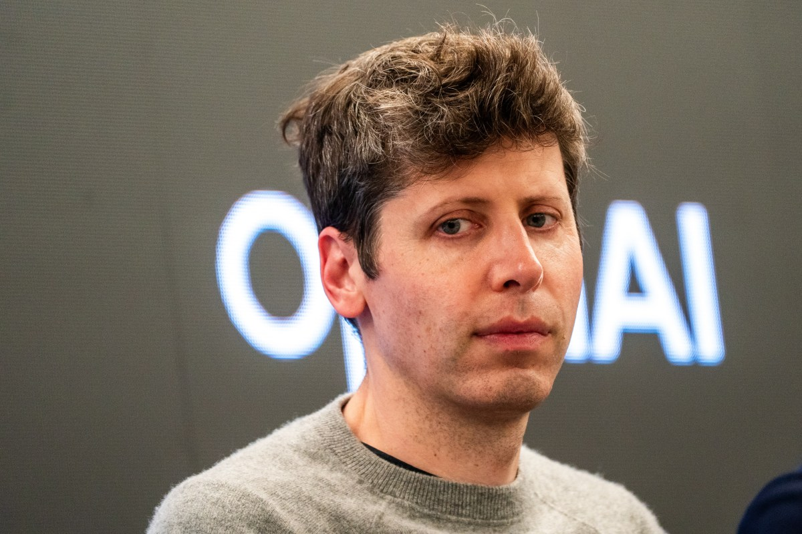
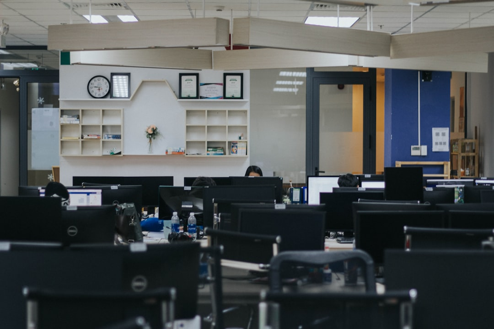
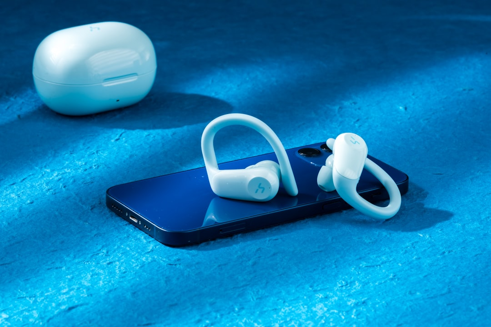

AI DAILY
AI 行业日报
2026年3月1日 · 精选 8 条
01行业动态
白宫封杀Anthropic：拒绝军用无限制，丢掉2亿美元合同
Anthropic拒绝让其AI技术用于大规模国内监控和无人操控的自主武器系统后，特朗普在社交媒体上下令所有联邦机构"立即停止使用Anthropic技术"。国防部长Hegseth同时将Anthropic列为供应链风险，禁止任何军方承包商与其合作。
Anthropic面临损失一份价值2亿美元的国防合同。公司表示将在法庭上挑战这一禁令。MIT物理学家、未来生命研究所创始人Max Tegmark评价：这些公司多年来抵制约束性监管，现在没有规则保护它们——"通往地狱的路是用好意铺成的"。同日，超过60名OpenAI员工和300名Google员工签署公开信支持Anthropic的立场。
INSIGHT
Anthropic画的红线——不做大规模监控、不做无人自主杀伤——在技术伦理上很难反驳。但当政府把"不配合"等同于"供应链风险"，其他AI公司就面临一个选择题：接受无条件军用，还是被踢出联邦市场。这道题的答案，可能比技术本身更能决定AI行业的走向。
02融资收购
OpenAI拿下1100亿美元融资，英伟达亚马逊软银三巨头入局
OpenAI宣布获得AI史上最大单笔融资1100亿美元，其中亚马逊500亿、英伟达300亿、软银300亿。投前估值7300亿美元。微软Azure仍是OpenAI API的独家云服务商，但OpenAI承诺未来8年在AWS上消耗累计约1000亿美元云计算资源。
加上账面原有约400亿美元现金，OpenAI可用资金将达1500亿美元。公司预计到2030年才首次实现正向自由现金流。目前ChatGPT周活用户已突破9亿，月访问量约57.2亿次，个人订阅用户超5000万。亚马逊首期投入150亿，剩余350亿需OpenAI"实现AGI"或成功上市后追加。
INSIGHT
英伟达投300亿给OpenAI，OpenAI再拿这笔钱买英伟达的芯片；亚马逊投500亿，OpenAI再花1000亿买AWS——供应商给客户投资，客户拿钱买供应商的产品。财报上"投资支出"变"营业收入"，市场份额还锁定了。这种循环融资能持续多久，取决于AI收入增长能不能跑赢烧钱速度。
03行业动态
OpenAI接下五角大楼合同，声称保留了"技术护栏"

在Anthropic被封杀的同一天，Sam Altman宣布OpenAI已与五角大楼达成协议，允许其AI模型部署在国防部的保密网络中。Altman声称合同包含两条安全原则：禁止国内大规模监控和武力使用必须由人类负责，包括自主武器系统。
但批评者指出，所谓"技术护栏"是OpenAI单方面声明，并非写入合同的法律约束。此前超过60名OpenAI员工签署公开信呼吁公司支持Anthropic立场。Anthropic CEO Dario Amodei此前表示，公司"从未反对军事行动中使用AI"，只是在"极少数场景下，AI可能损害而非捍卫民主价值"。
INSIGHT
Anthropic拒绝、被封杀；OpenAI接受、拿合同——时间节点精准到同一天。关键区别在于"护栏"是谁定义的：写进合同的法律条款，和CEO发在社交媒体上的声明，约束力完全不同。60名自家员工的公开信，说明OpenAI内部对这笔交易也有分歧。
04行业动态
Block裁掉46%员工：不是亏钱了，是AI太好用了

Twitter联合创始人Jack Dorsey的支付公司Block宣布裁员超过4000人，从1万多人缩减到不足6000人。公司业绩在涨、利润在涨、股价在涨——但Dorsey在全员邮件中直说：裁员原因是AI太好用了，好到不再需要这么多人。消息公布当天，Block股价盘后上涨超过24%。
这是历史上首次有盈利公司公开以AI为由大规模裁员。此前Klarna用AI客服替代700名员工的工作量，Duolingo终止大批内容外包，IBM用AI替换8000个HR岗位——但这些都在悄悄做。Dorsey的预测："未来一年内，大多数公司会做出类似的结构性调整"。2025年美国直接归因于AI的裁员已超过5.5万人。
INSIGHT
过去裁员要遮遮掩掩，说"业务调整""组织优化"。Dorsey直接把AI摆上台面，市场还用24%涨幅投了赞成票。当"公司赚钱=我就安全"的潜规则被打破，职场安全感的锚定逻辑变了——不是你做得不够好，是有更便宜的替代出现了。
05产品发布
阿里千问进军AI硬件：眼镜、耳机、指环，3月2日开启预约

阿里旗下AI助手千问将进入硬件领域，2026年规划的产品包括AI眼镜、AI耳机、AI指环，面向全球发售。其中AI眼镜将在MWC上发布，3月2日开启预约。千问App上的点外卖、打车等功能将无缝迁移到这些终端设备。
不只是阿里——Meta在RayBan AI眼镜基础上构建可穿戴硬件生态（AI耳机、神经腕带、智能手表）；OpenAI已组建超2000人硬件团队，计划推出智能眼镜、录音笔、可穿戴胸针；字节的AI眼镜和耳机也在筹备中。阿里新开源的Qwen3.5-Plus部署显存降低60%，API成本仅为Gemini 3 Pro的1/18，专为端侧适配。
INSIGHT
AI巨头集体从软件冲向硬件，争的是同一件事：谁成为用户跟AI交互的第一个入口。手机屏幕是现在的入口，但眼镜、耳机、指环能采集的数据维度远超屏幕。对阿里来说，硬件不只是新品类，是把支付宝、高德、淘宝整个生态串起来的"物理接口"。
06行业动态
汉堡王给员工戴上AI耳机：你的每一句"谢谢"都在被打分
汉堡王推出由OpenAI驱动的语音助手Patty，集成在员工耳机中。它能回答操作问题（"枫糖波旁皇堡放几片培根？"），设备故障或缺货时15分钟内自动同步所有渠道。但它还有另一个功能：监听员工与顾客的对话，识别"欢迎光临""请""谢谢"等关键词，给门店的"服务友好度"打分。
Patty已在500家门店试点，计划2026年底覆盖全美所有餐厅。同期麦当劳砍掉了与IBM合作的AI点餐项目，塔可钟的语音AI在得来速频繁翻车。汉堡王选了不同策略：不用AI面对顾客，用AI面对员工。该系统还在改进，目标是更好地捕捉"对话的语气"。
INSIGHT
面对顾客的AI翻车会变公关事故，面对员工的AI翻车——能有什么大事？这个选择很精明，但藏着一个古德哈特定律的陷阱：当"请"和"谢谢"变成KPI，员工优化的是指标本身，不是服务质量。算法盯的是词语，不是人。
07政策监管
白宫划红线：AI数据中心不能把电费转嫁给居民

特朗普在国情咨文中要求：大型科技公司建AI数据中心时必须自带电源，不能把新增用电成本转嫁给居民。美国最大区域电网运营机构PJM同步推出新规：数据中心想更快接入电网，要么自备发电设施，要么接受紧急时段的优先负荷削减。
背景是科技巨头计划2026年砸超过6000亿美元扩张AI基础设施。Anthropic已公开承诺承担数据中心并网的全部电网升级成本，不转嫁消费者——这一动作抬高了行业谈判锚点。对中小算力公司来说，电力侧的信用门槛意味着：不是电价贵不贵，是连进场资格都更难拿到。
INSIGHT
"拿电"从买电变成了带义务的准入资格。微软、亚马逊这种级别的玩家用财务能力换确定性，但中小玩家面临的不是电贵，而是电网准入门槛。算力竞争正从技术比拼，推向资本和信用的比拼。
08技术突破
中国人形机器人出货量是美国对手的36倍，领跑早期市场
2025年全球人形机器人出货量13,317台，前六名厂商全部来自中国：智元机器人（Agibot）、宇树科技（Unitree）、优必选、乐聚、引擎AI、傅利叶智能。中国头部厂商宇树科技去年出货量是美国竞争对手Figure和特斯拉的约36倍。
Eric Schmidt办公室的中国政策研究员Selina Xu指出，中国优势来自电动车行业积累的硬件供应链——从传感器到电池——以及全球最强的制造基础。行业预计到2035年出货量将达260万台，年复合增长率接近翻倍。但目前数据中有多少是商业销售、多少是演示机或试点，仍不清楚。
INSIGHT
36倍出货差距的核心不是技术——是电动车产业链的外溢效应。传感器、电池、电机、精密制造，中国在新能源车上建的供应链直接复用到人形机器人，美国玩家在这一层补不上来。行业从"展厅级Demo"转向"工厂级部署"的节点，可能比预想中更快。
由 Zayen知览 整理 · 构建者视角